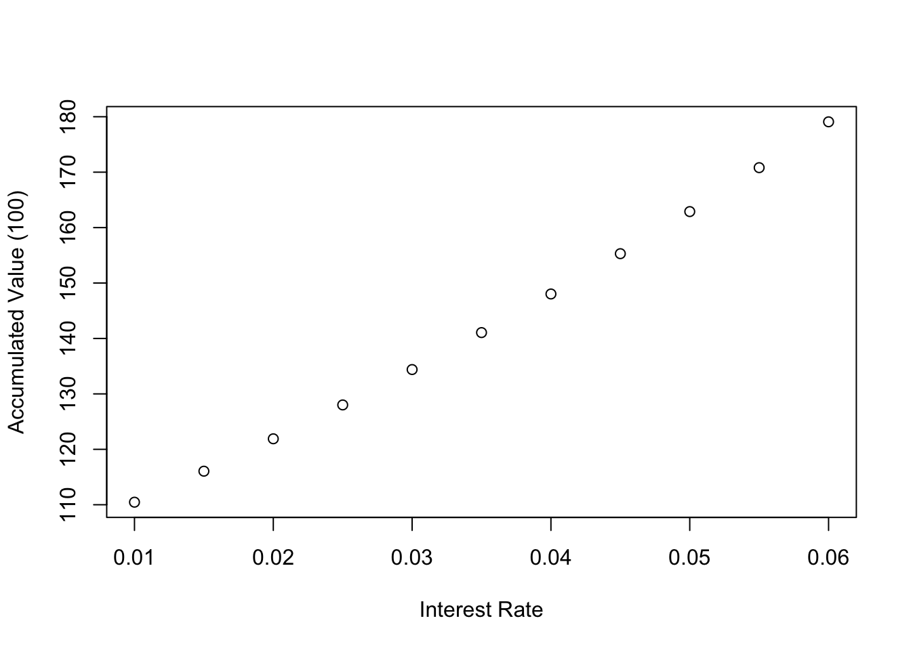
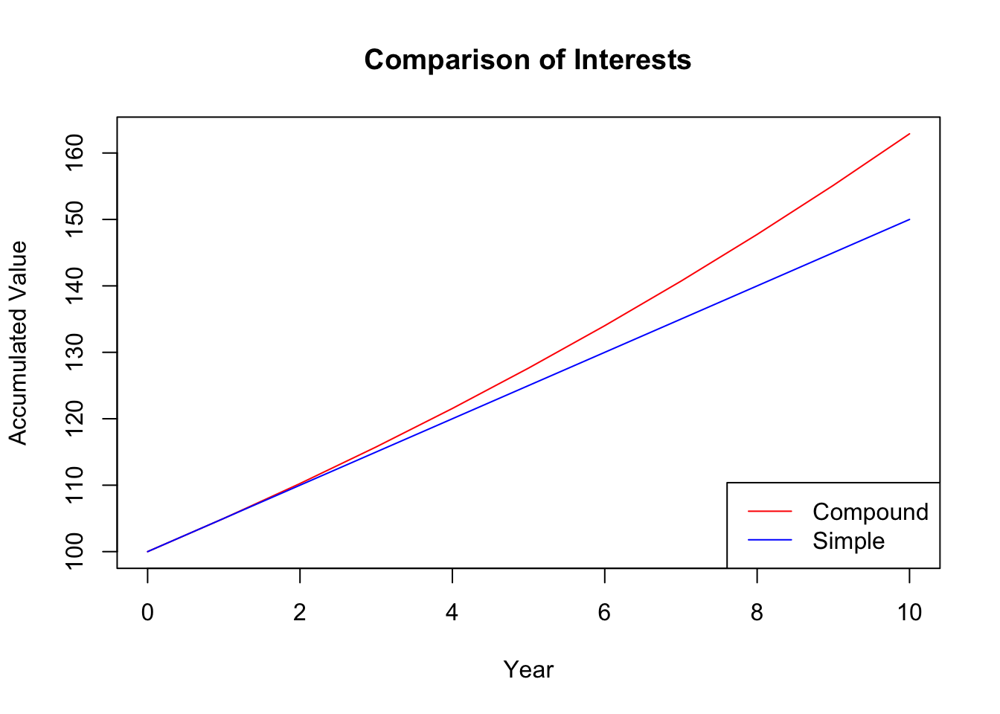
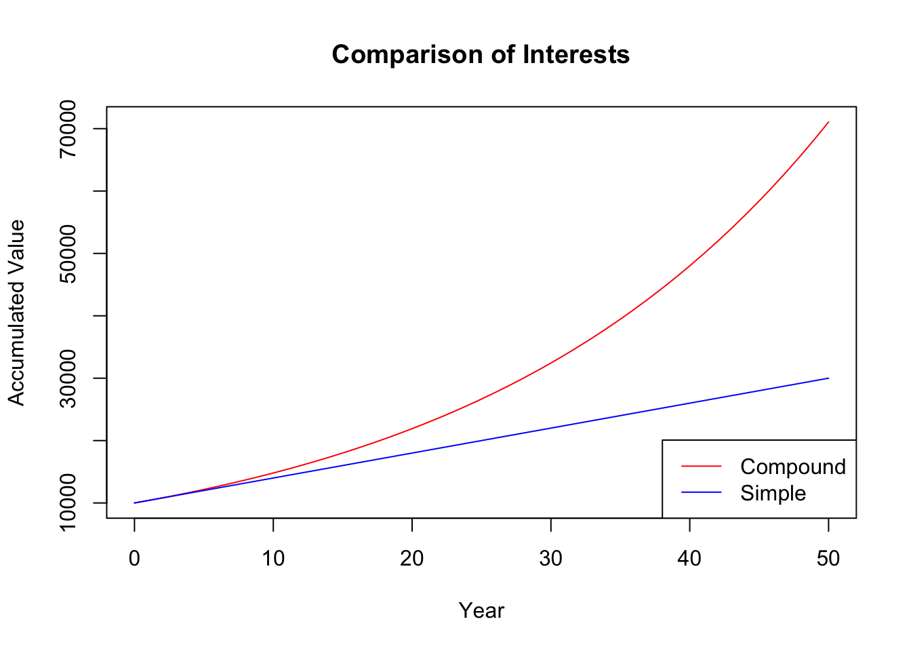

Week4 Functions
In the previous weeks, we have already encountered and worked with some of R’s pre-defined functions that you can use on your data/objects to produce certain results. For example, the mean() function, var() function or even plot() function. Each of these ‘functions’ require one (or more) input variables, then provide some output. Although these functions are readily available for you to use in the base packages, the functions themselves have actually been created from scratch and primarily consist solely of basic programming techniques we have already discussed, e.g. loops, conditional statements etc.
4.1 Creating functions
In this section, we are going to discuss how to create our own functions. There are two main reasons for wanting to create your own functions:
To reuse a series of code over and over again without having to re-write the same code (especially if the code is complex and long)
For other people to use in their programming (similar to how we have already used some of the functions other people have created)
To create a function in R, we need to following steps:
- Choose of a name for the function
- Consider the input variables that will be required for the function
- Use the following lines of code:
functionname <- function(input1, input2, ...){
Commands to execute for function using input variables listed
}
As a basic example, let us re-create the mean() function ourselves from scratch:
mean(1:100) # Remind ourselves how the mean() function works## [1] 50.5mean_function <- function(x){
sum(x)/length(x)
}
mean_function(1:100)## [1] 50.5mean_function(5:5000)## [1] 2502.5As you can see in the above, once the function has been created and given a name, in this case mean_function() it can now be called and used like any other pre-defined function.
(vec <- rexp(100, rate = 1))## [1] 0.096640972 0.829660334 1.408175552 0.313415938 0.279457652 0.426508102
## [7] 0.538524765 0.249263008 0.216841996 0.545926053 0.460613382 2.556941589
## [13] 0.210726743 0.298376179 0.359477274 1.796820436 2.331022033 1.598724453
## [19] 4.923014687 1.011400064 1.183574310 0.040974329 0.279583085 2.251831347
## [25] 0.466342899 0.732527413 0.063852838 1.289213391 0.760949370 0.257755994
## [31] 5.194237457 0.714238996 3.213600613 1.584464442 0.967644998 1.620325401
## [37] 0.047498409 1.545039678 3.022576004 2.409790149 0.205785170 1.768275987
## [43] 0.584549994 0.422282051 0.217702521 0.611086800 0.273040286 1.559650544
## [49] 0.541932188 0.168470267 1.006401632 1.352659563 0.014390410 3.787052875
## [55] 0.455540347 0.648091310 1.039261215 0.758666094 0.682286989 0.356108108
## [61] 1.343534315 1.182898395 1.131022902 0.317487083 0.119867390 0.068464130
## [67] 0.252026001 0.408857007 2.902432434 1.393220743 0.269261575 0.843146784
## [73] 0.697063353 0.957246735 2.054235557 0.389072766 0.516325327 0.527732468
## [79] 1.699314478 6.829284651 1.656379539 0.280179854 1.149262799 0.635292403
## [85] 2.085677417 0.395445838 0.400709653 0.394910296 0.137975692 0.009975154
## [91] 2.239651570 0.072497230 0.243507113 0.269856662 0.027878448 0.010873931
## [97] 0.743335640 0.754809034 1.452629419 0.558333069mean(vec)## [1] 1.019725mean_function(vec)## [1] 1.019725As you can see from this simply example, it is even possible to use functions inside functions, e.g. we have used the sum() and length() functions inside our newly created function.
Exercise 4.1 Can you create a function called sum_function which sums up all of the values in a vector without using the predefined sum() function?
Solution
sum_function <- function(y){
sum <- 0
for (i in 1:length(y)){
sum <- sum + y[i]
}
return(sum) # Why this and not print(sum)?
}
sum_function(1:500)## [1] 125250Notice that in the above construction of the function we have used return(sum). Why do we do this rather than ask R to print(sum)?
sum_function_print <- function(x){
sum <- 0
for (i in 1:length(x)){
sum <- sum + x[i]
}
print(sum)
}
sum_function(1:10)## [1] 55sum_function_print(1:10)## [1] 55In the above, it does not seem to make any difference if we have used return(sum) or print(sum) but what if we want to use the function as part of another calculation?
sum_function(1:10) + 10## [1] 65sum_function_print(1:10) + 10## [1] 55## [1] 65You can see that in the above example, when we have used the version with print() in another calculation, we end up with two outputs. This is because we have instructed R that every time the function is executed, it should print the initial result of the function. Then, R also automatically saves the final value for the function and uses it in the remainder of the calculation, resulting in the second output. Unless you specifically want this, you should always use return(), to ensure R only saves the final value to the function. NOTE: If you only use return() R will still display the final output of the function (see the example above).
Exercise 4.2 Using IF statements, can you create a function that rounds a number to its nearest integer (.5 rounds up)? You cannot use the already pre-defined round() function.
Solution
round_function <- function(x){
if(x %% 1 < 0.5){
return(x-(x%%1))
} else {
return(x+1-(x%%1))
}
}
round_function(9.3)## [1] 9round_function(9.5)## [1] 10Of course, some functions are much more complicated underneath the surface. For example, the lm() function executes a full ‘linear regression’ fitting to a set of data and returns a variety of information about the fitted model:
fit <- lm(mtcars$mpg ~ mtcars$hp)
summary(fit)##
## Call:
## lm(formula = mtcars$mpg ~ mtcars$hp)
##
## Residuals:
## Min 1Q Median 3Q Max
## -5.7121 -2.1122 -0.8854 1.5819 8.2360
##
## Coefficients:
## Estimate Std. Error t value Pr(>|t|)
## (Intercept) 30.09886 1.63392 18.421 < 2e-16 ***
## mtcars$hp -0.06823 0.01012 -6.742 1.79e-07 ***
## ---
## Signif. codes: 0 '***' 0.001 '**' 0.01 '*' 0.05 '.' 0.1 ' ' 1
##
## Residual standard error: 3.863 on 30 degrees of freedom
## Multiple R-squared: 0.6024, Adjusted R-squared: 0.5892
## F-statistic: 45.46 on 1 and 30 DF, p-value: 1.788e-07Note: Do not worry about understanding all of this output here, it is included purely for the sake of an example.
Although such functions may look much more complicated, they are still ultimately only made up of combinations of basic commands (albeit many lines of them), the concept is much the same and only requires more thought. As an example of a slightly more complicated function, let us create a prime number calculator:
4.2 Prime number calculator - example
prime <- function(number){
flag <- 0
if(number == 2){
flag <- 1
} else if (number > 2) {
# check for factors
flag <- 1
for(i in 2:(number-1)) {
if ((number %% i) == 0) {
flag <- 0
break
}
}
}
if(flag == 1) {
print(paste(number,"is a prime number"))
} else {
print(paste(number,"is not a prime number"))
}
}
prime(7)## [1] "7 is a prime number"prime(986376383)## [1] "986376383 is not a prime number"4.3 Multiple Input Variables
In the functions we have created so far, we have only considered one input variable. However, it is possible to create functions with multiple inputs. For example, imagine we wanted to find the accumulated value of an investment over some time period under compound interest. In such a problem, you have three different possible inputs:
- Initial investment
- annual interest rate
- Time (years):
Acc_value <- function(initial, interest, years){
value <- initial*(1+interest)^years
return(value)
}
Acc_value(100000, 0.05, 25) ## [1] 338635.5Acc_value(100,0.05,10)## [1] 162.8895Notice how much easier this is now that we have created a function. Before functions, we would have had to define each variable as a set value, then run the calculation and every time we wanted to calculate it for a new set of values, we would have to change them individually and run it all again, i.e.,
initial <- 100000
interest <- 0.05
years <- 25
initial*(1+interest)^years## [1] 338635.5Creating functions avoids this tedious problem but also allows us to use them inside other calculations or even other functions (see later).
Before we look at some examples of functions working inside of functions, we note that functions also work with vectors:
(x <- seq(0.01, 0.06, by = 0.005))## [1] 0.010 0.015 0.020 0.025 0.030 0.035 0.040 0.045 0.050 0.055 0.060Acc_value(100000, x, 25)## [1] 128243.2 145094.5 164060.6 185394.4 209377.8 236324.5 266583.6 300543.4
## [9] 338635.5 381339.2 429187.1In this case, the function works element-by-element wise in the usual way to create a vector of outputs. To see this implemented inside another function, let us consider the following example of plotting the various accumulated values calculated above using the plot() function:
plot(x, Acc_value(100,x, 10), ylab = "Accumulated Value (100)", xlab = "Interest Rate")
This particular use of the function within the plot() function will prove to be very useful for future assessments, where you are typically asked to compare certain quantities under varying conditions (interest rates, terms etc.)
As another example, we recall that there are actually two different types of interest (Simple and Compound). Of course, we could create two separate functions for each of these. However, since these are related it would be nice to have a single function that could deal with both. This can easily by adding a new variable:
Acc_value <- function(initial, interest, years, type){
if (type == "compound"){
value <- initial*(1+interest)^years
return (value)
} else if (type == "simple"){
value <- initial*(1+(interest*years))
return (value)
} else {
print("Invalid Interest Type. Must either be 'compound' or 'simple'")
}
}
Acc_value(100, 0.05, 10, "simple")## [1] 150Acc_value(100,0.05,10, "compound")## [1] 162.8895Acc_value(11, 0.05, 10, "comp")## [1] "Invalid Interest Type. Must either be 'compound' or 'simple'"An alternative way to do this to let the type variable by a Boolean value as we have seen in other functions:
Acc_value <- function(initial, interest, years, compound){
if (compound == TRUE){
value <- initial*(1+interest)^years
} else if (compound == FALSE){
value <- initial*(1+(interest*years))
}
return(value)
}
Acc_value(100, 0.05, 10, compound = FALSE)## [1] 1504.3.1 Default options
In some cases, you can have variables within a function that can be changed but more often than not will take a certain value. In this case, you can set a default value for this variable which it will take if not explicitly defined in the function command:
Acc_value <- function(initial, interest, years, compound = TRUE){
if (compound == TRUE){
value <- initial*(1+interest)^years
} else if (compound == FALSE){
value <- initial*(1+(interest*years))
}
return(value)
}
Acc_value(100, 0.05, 10)## [1] 162.8895Acc_value(100, 0.05, 10, compound = FALSE)## [1] 150Finally, just as a nice example of the above application, we could further develop the interest function above:
Acc_value <- function(initial, interest, years, compound = TRUE, compare = FALSE){
comp_values <- c(initial)
for (i in 1:years){
comp_values <- c(comp_values,initial*(1+interest)^i)
}
simp_values <- c(initial)
for (i in 1:years){
simp_values <- c(simp_values, initial*(1+(interest*i)))
}
if (compare == FALSE){
if (compound == TRUE){
return(comp_values[length(comp_values)])
} else {
return(simp_values[length(simp_values)])
}
}
if(compare == TRUE){
x <- 0:years
plot(x, comp_values, ylab = "Accumulated Value", xlab = "Year", main = "Comparison of Interests", type = "l", col = "red")
lines(x, simp_values, type = "l", col = "blue")
legend("bottomright", legend = c("Compound", "Simple"), col = c("red", "blue"), lty = 1)
}
}
Acc_value(100, 0.05, 10)## [1] 162.8895Acc_value(100, 0.05, 10, compound = FALSE)## [1] 150Acc_value(100,0.05, 10, compare = TRUE)
Acc_value(10000, 0.04, 50, compare = TRUE)
Now that you understand the basics of how functions work, try having a go at the following exercises.
4.4 Exercies
- Recall that in the session, we discussed how to re-create the
sum()andmean()function from programming basics. In a similar way, create a function calledvariancethat calculates the variance of a vector of values. You are allowed to use the pre-definedsum()andmean()functions inside your variance function. Try doing this in two different ways:
- Using For loops
- Using vectorised calculations.
Create a function that, given an integer, will calculate how many divisors it has (other than 1 and itself). Make the divisors appear on the screen.
From your ‘Introduction to Actuarial Science’ module, you should have come across the concept of ‘discounting’ and the ‘present value’ of money. Create a function in R called
PVthat takes 3 input variables: 1) Final value (F), 2) Annual interest rate and 3) Number of years, which calculates the present value of F.Recall that for geometric summation, we have \[\begin{equation*} \sum_{k = 0}^{n-1} x^k = \frac{1-x^n}{1-x}. \end{equation*}\] Moreover, if \(|x| < 1\), the above summation converges as \(n \rightarrow \infty\), such that \[\begin{equation*} \sum_{k = 0}^{\infty} x^k = \frac{1}{1-x}. \end{equation*}\]
Create a function in R called GeomSum that takes two input variables (x and n) and calculates the geometric sum of x from 0 up to n. It should also be possible to include the option that \(n = \infty\).
Hint: You may have to include a Boolean value for this but remember, the above limit only exists under a given condition. If this condition is not satisfied, make the function print out a warning message.
Recall from your ‘Introduction to Actuarial Science’ module that the ‘Accumulated Value’ of an annuity-due with unit payments is defined by \[\begin{equation*} \ddot{s}_{n\rceil} = (1+i)^n + (1+i)^{n-1} + \cdots + (1+i) = \frac{(1+i)^n -1}{i}\times(1+i) \end{equation*}\] Create a function that takes three input variables representing 1) The value of repeated payments, 2) The annual interest rate and 3) The number of years. The function should create a vector with the accumulated value of the investment after each year and plot it on a basic plot against time (see the R Script for a similar example).
Recall the Stock price example from Problem Sheet 2 (Problem 10). Create a function called
Stockthat allows the user to input a starting amount, the standard deviation of percentage change (assume the change is normally distributed \(N(0, \sigma^2)\)) and the values of an upper and lower barrier. The function should then plot the movement of the stock and print out the number of days it takes to reach either the upper or lower barrier.
4.5 DataCamp course(s)
- https://www.datacamp.com/courses/intermediate-r (Intermediate R Course)